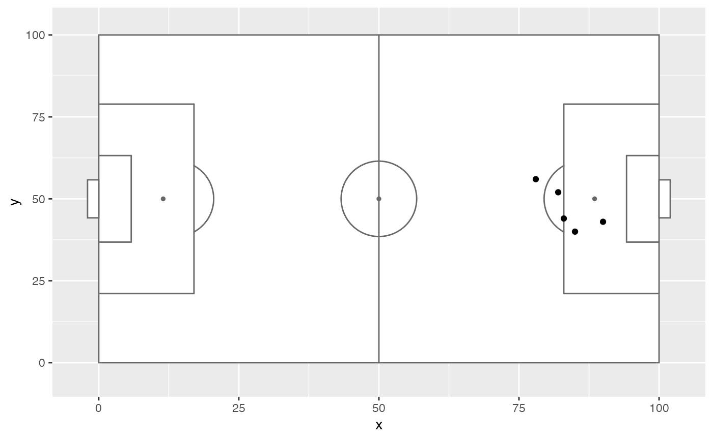

annotate_pitch.RdAdds soccer pitch markings as a layer for use in a ggplot plot.
annotate_pitch(colour = "dimgray", fill = "white", limits = TRUE, dimensions = pitch_opta)
| colour | Colour of pitch outline. |
|---|---|
| fill | Colour of pitch fill |
| limits | Whether to adjust the plot limits to display the whole pitch. |
| dimensions | A list containing the pitch dimensions to draw. See |
list of ggplot geoms to be added to a ggplot plot
library(ggplot2) shots_data <- data.frame(x = c(90, 85, 82, 78, 83), y = c(43, 40, 52, 56, 44)) ggplot(shots_data, aes(x = x, y = y)) + annotate_pitch() + geom_point()